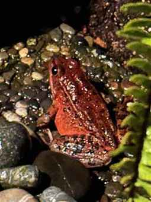

About Project Draytonii
A personal dashboard that turns your ChatGPT, Claude, and Gemini usage into a clear picture of the energy, carbon, water, and mineral cost behind it - built from the official data export each platform already lets you download.
Our Mission
Our mission is to give everyday users of ChatGPT, Claude, and Gemini a clear, personal view of the environmental cost behind every prompt they send - turning an invisible, abstract impact into concrete numbers people can see, understand, and act on.
Our Vision
We envision a future where environmental transparency is a standard feature of every AI product, not an afterthought - where checking your AI footprint is as ordinary as checking your phone's battery usage, and where that visibility nudges the industry toward genuinely more efficient models and infrastructure.
Our Values
- Transparency We show our work. Every estimate on this dashboard traces back to a cited, published source, not a black box - see the Sources page for the full list.
- Accuracy Over Alarmism We favor real data and clearly labeled estimates over exaggerated claims, and we openly flag where the underlying science is still uncertain or incomplete.
- Accessibility Understanding your AI footprint shouldn't require a research background. The numbers here are presented simply, with plain explanations of what each one means.
- Privacy by Design Your conversation data is parsed inside your own browser and never uploaded. Only small, aggregated numbers ever leave your device - see the Your Data page for details.
Why the Sustainability of AI Matters
AI's environmental cost is real, measurable, and growing - even as individual models become more efficient over time.
- Training is carbon-intensive. Training a single frontier model can emit hundreds of tons of CO2eq; GPT-3's training run alone is estimated at roughly 552 tCO2eq (Patterson et al., 2021).
- Efficiency gains don't mean zero impact. Google's own 2025 production measurements found real, non-zero energy, water, and carbon costs per Gemini prompt - even after the company reported a 44x reduction in per-prompt carbon over the prior twelve months (Google, 2025). The industry's own numbers confirm this was, and still is, a real cost worth tracking.
- Water use extends beyond the data center. Early estimates put inference-time water use at roughly 10-25 mL per prompt for GPT-3-era models (Li et al., 2023), and the chips themselves are costly to produce: a single advanced semiconductor fab can use 20-38 million liters of water per day (World Economic Forum; IDTechEx).
- The hardware supply chain has its own footprint. The chips that power these models depend on a small number of geographically concentrated critical minerals - gallium, germanium, palladium, and silicon among them - raising supply-chain and extraction concerns that go beyond carbon accounting alone (CSIS, 2025).
- Small costs, multiplied billions of times, add up. Any single prompt's footprint is tiny. But billions of prompts are sent across ChatGPT, Claude, and Gemini every day, and that scale is exactly why visibility at the individual level matters - you can't reduce what you can't see.
Full citations for every figure above are on the Sources page.
Our Name: Rana Draytonii

This project takes its name from Rana draytonii, the California red-legged frog - a species listed as threatened under the U.S. Endangered Species Act and long recognized as a symbol of conservation across California (U.S. Fish & Wildlife Service; National Wildlife Federation).
Historically found across most of the state, the California red-legged frog's decline has been driven almost entirely by human activity: habitat loss from urban development and agriculture, water diversion and wetland drainage, pollution, and the introduction of non-native predators like the American bullfrog, which outcompetes and preys on the native frog (NatureServe; National Wildlife Federation). This frog didn't disappear because of anything it did - it disappeared because of choices made by the humans sharing its habitat, echoing the way today's technology choices, including how we build and use AI, quietly reshape the environment around us.
There is reason for hope. Recent conservation efforts, including large-scale reintroduction programs releasing captive-raised Rana draytonii back into protected habitats, have helped stabilize some populations (U.S. Fish & Wildlife Service). We named this project after Rana draytonii as a reminder that environmental harm driven by human activity - whether it's habitat destruction or the resource cost of a data center - is also within human power to measure, address, and reverse.
Sources for this section are listed on the Sources page.